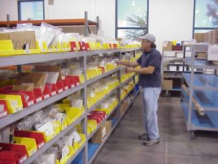

|
Kanban - Supermarket  Many customers utilize common hardware (C-part) Kanban inventory locations within their assembly areas. These point-of-use inventory locations contain high-usage/low-value parts. OEM Logistics provides the process and personnel resources required to procure hardware, monitor usage, scan and maintain stock at these point-of-use locations. OEM Logistics goes on-site at the customer’s location to monitor and scan all front (active) bin stock outs and will deliver the necessary hardware to the customer’s site as early as the same day. Concurrent with this scanning/stocking activity, OEM Logistics initiates an order to its hardware supplier to replenish the OEM stock.
Aerospace Logistics, Quality and Assurance ISO9002 Certified
|
|